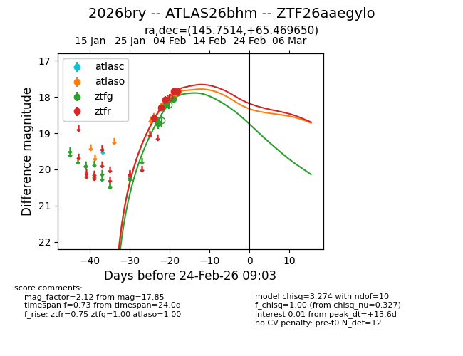
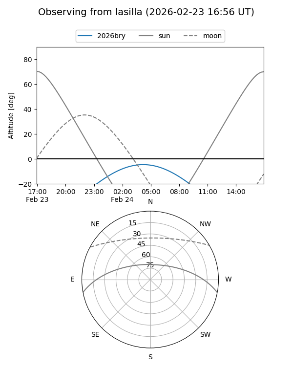
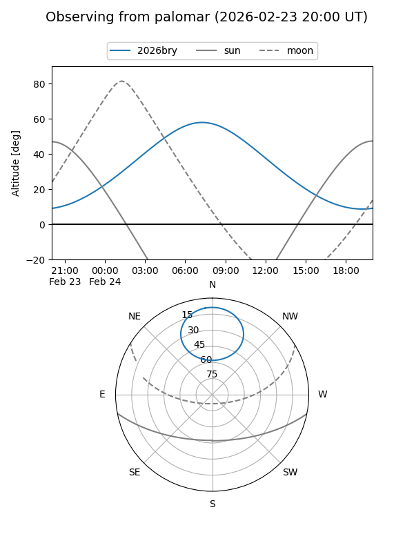
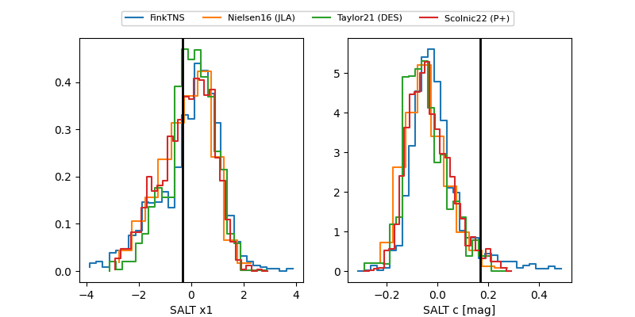

2026bry
Target 2026bry at 2026-02-24 09:08
Aliases and brokers:
FINK: link
Lasair: link
ALeRCE: link
TNS: link
YSE: link
alt names
ZTF26aaegylo (ztf,fink_ztf)
2026bry (tns,yse)
ATLAS26bhm (atlas)
Coordinates:
equatorial (ra, dec) = 145.7514,+65.46965
equatorial (HMS+DMS) = 09:43:00.32,+65:28:10.74
galactic (l, b) = (147.0062,+41.78337)
Flags:
Photometry:
last atlaso=17.85, ztfg=18.05, ztfr=17.83
4 atlaso, 3 ztfg, 5 ztfr detections
Lightcurve

Visibility


Additional plots
